The challenge
Customers judged one promise—fast, convenient pickup—across several disconnected systems: local inventory, order preparation, in-store queueing, and handoff. A better screen alone could not fix an experience that broke down in the store.
Role & strategy
My role
I partnered with the customer experience and store operations teams to make the end-to-end service visible, align on the highest-friction moments, and translate those moments into a staged experience strategy.
Evidence behind the strategy
Why are the customers giving us negative feedbacks? What are they complaining? From what perspectives can we help making the BOPUS experience better?
To understand customers' mental modal, We pulled out the verbs from customer feedbacks and interviews then laid them out chronologically.
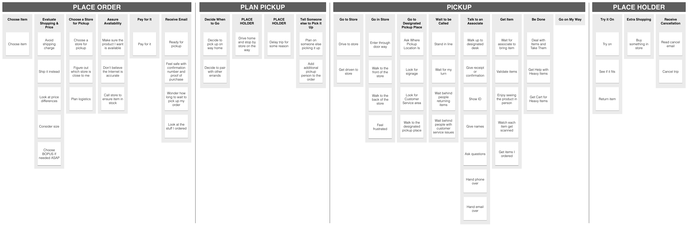
Customer feedback:
"In store I had to wait a long line while in customer service there was only one person attending customers like myself. It took 30 minutes to get to the customer service register then I had to wait another 10 minutes for an employee to go fetch my item downstairs when in my email confirmation it said that my item should be ready and waiting for me at the customer service register."
"The process of checking in waiting in line them bringing up the items and then them scanning each items defeats the purpose of store pick up. The experience was just as if I had come to the store and used the checkout lane. Definitely not a fast experience. Very disappointing."
Among the negative feedbacks, we identified some of the main complaints.
- Localized store inventory is not accessible online.
- Pickup process is too complicated. When picking up multiple items, store associate needs to scan every item.
- Merchandise price gets lower when picking up.
- Have to wait in line for a long time and then wait for the store associate to fatch the item.
- etc...
Having to wait in line for a long time is the most complained problem.
The strategic bet: design the service, not the screen
What is happening during the entire BOPUS process? What did we do to make our customers complain? To answer that, I put out a service design blueprint and validate it with Kohl's store operation team.
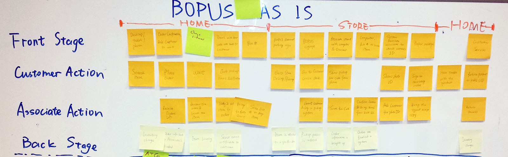
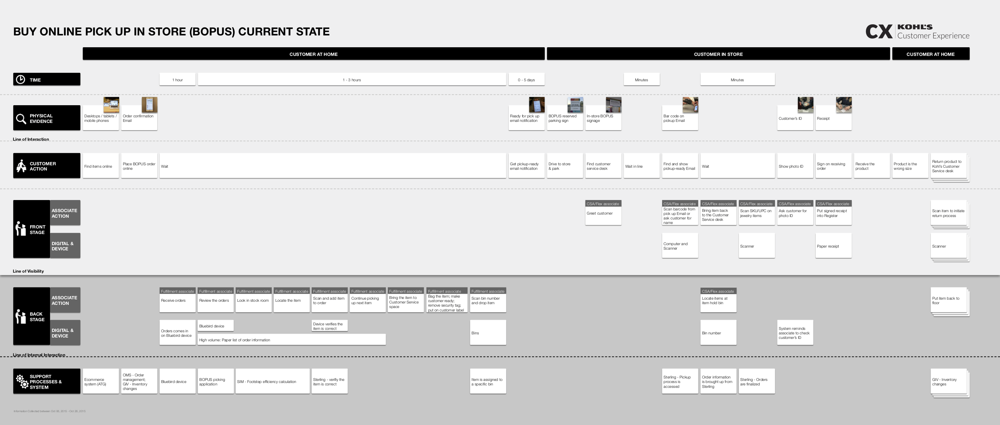
It usually takes 1 hour for the store to receive and review customer's order, and another 1 to 3 hours for store associate to find and bring the item to customer service desk. That's up to 4 hours between customer placing the order and receiving order-ready-for-pickup email.
In store, there is only one line in front of customer service desk. It is the only place that deals with product returns and exchanges, order cancellation, purchase rebates, product pickups, etc.
There are usually dozens or hundreds pickup orders. The merchandises have to be stored temporarily in the backroom after customer service desk. When customers arrive, the storer associate needs to go to to the backroom to find the merchandise.
Upon receiving the order, we gave customers a 7-day pickup window. If the order is not picked up in 7 days, the merchandise will be brought back to shelf and the order is treated as cancelled. The store associates don't know on which day would the customer come, so they don't know how to prioritize the pick up products.
The store associate needs to scan customer's ready-for-pickup email barcode, scan every item's barcode, check customer ID, get customer's signature, etc. to get the pickup process done. The ready-for-pickup email is long and takes time to find the barcode.
Co-creating operationally viable ideas
We partered with Kohl's store operation team and conductd a participatory design workshop to brainstorm solutions to make BOPUS experience faster and easier. We specifically focused on line busting ideas to reduce customer's wait time.
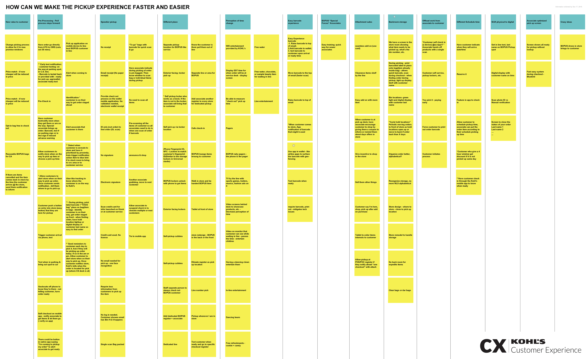
Waiting in line is a universal problem for many other domains. Besides the workshop I also made a mood board, trying to find connections on the similar problem between different scenarios to get inspirations.
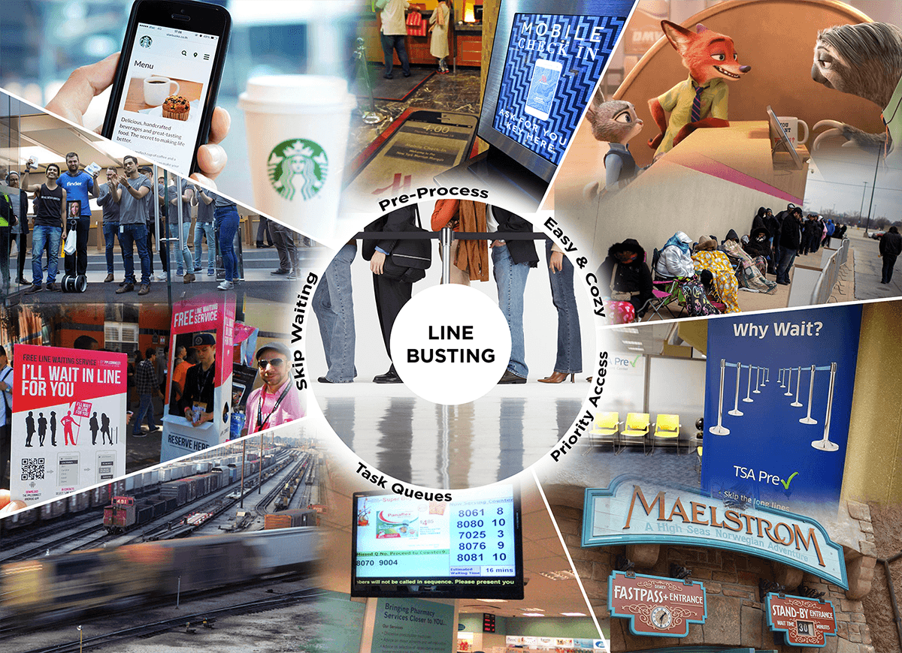
Selected strategic decisions
Short term improvement needs to be implemented soon. Dedicated BOPUS area in store is needed for customers to pick up their orders. It would be more efficient if the store associates know the reasons that customers come to customer service desk.
Long term strategy needs to be considered and planned. We need to improve internal order-preparing process, train our store associates to make preparing window much shorter. Better service can be provided with the help with new technology
The solution: a staged BOPUS service model
Concept 1 - Customer Self Check-in
Inspired by flight check-in process, why can't our customer check in on their phone to let store associates know that they are on their way to pick up their orders? Similar to board ing pass, attached with the ready-for-pickup email or text message, a pickup pass would be much easier for customers to find.
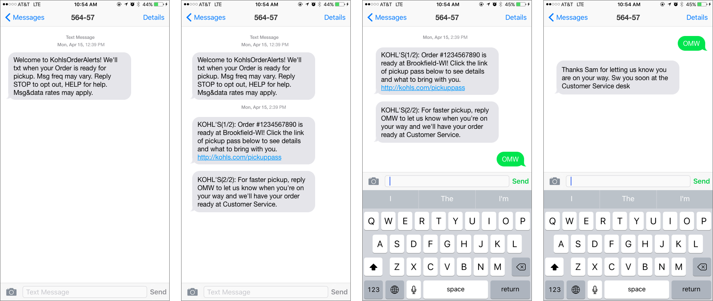
Customers can click on a button on their ready-for-pickup email to let store associates know that they are on their way.
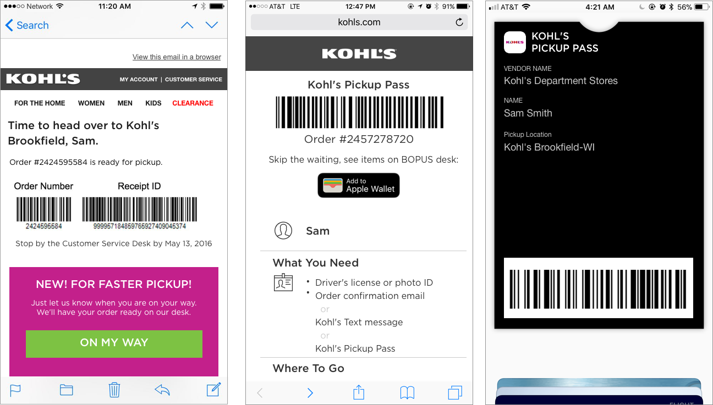
Even faster, if users have Kohl's app installed on their mobile phones, simply check in on the notification.
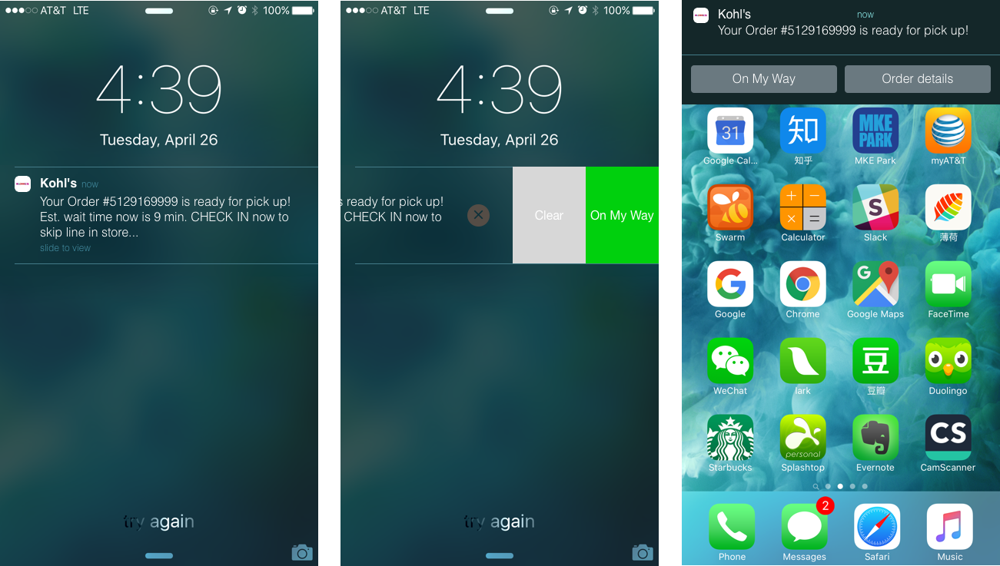
Concept 2 - Dedicated Pickup Area in Store
After see our customers feedbacks and competitive analysis with other retailers, we decided to propose a dedicated area for pickup customers, as we are confident in the increasing use of BOPUS as a shopping approach.
\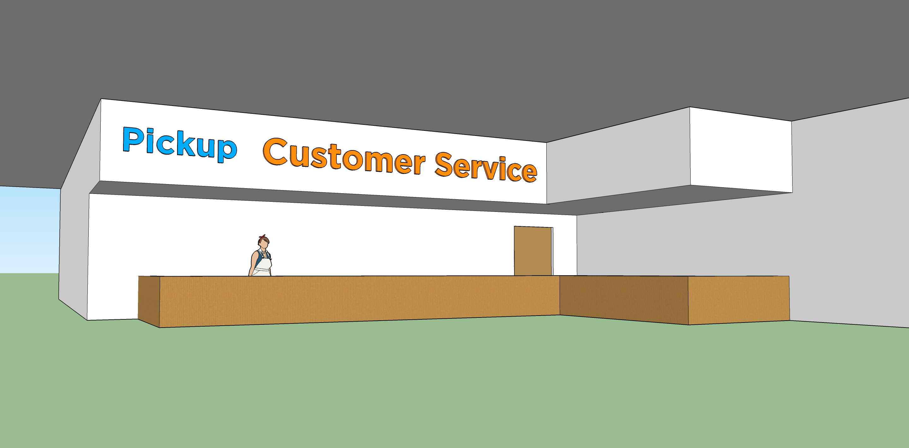
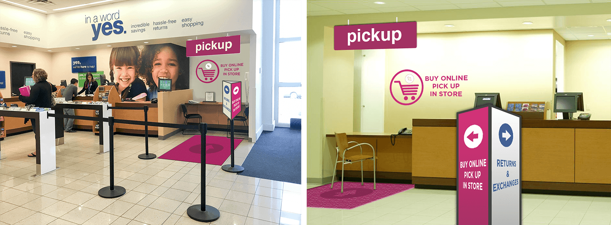
With customer initiated check-in and dedicated pickup area, it will take much less time for customers to complete their pickup process.
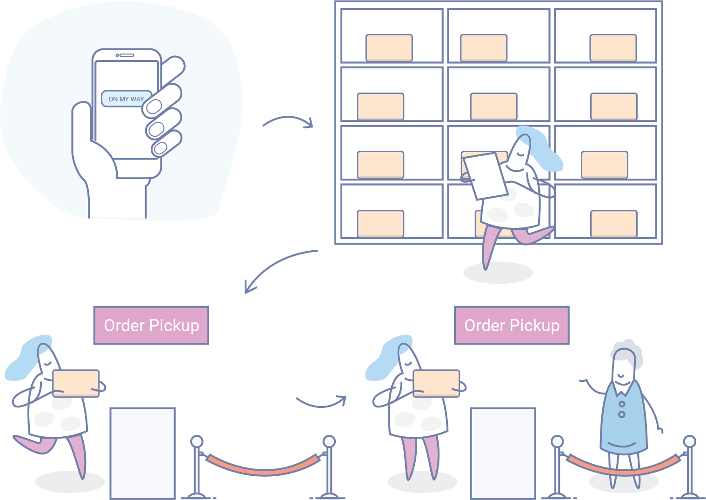
Concept 3 - Kiosk Pickup
There are usually 4 kiosks in each Kohl's stores, which have barcode scan capability. If there is a long line in front of customer service, customer can choose to scan their pick up pass at a kiosk, store associate will bring the merchandise to the customer.
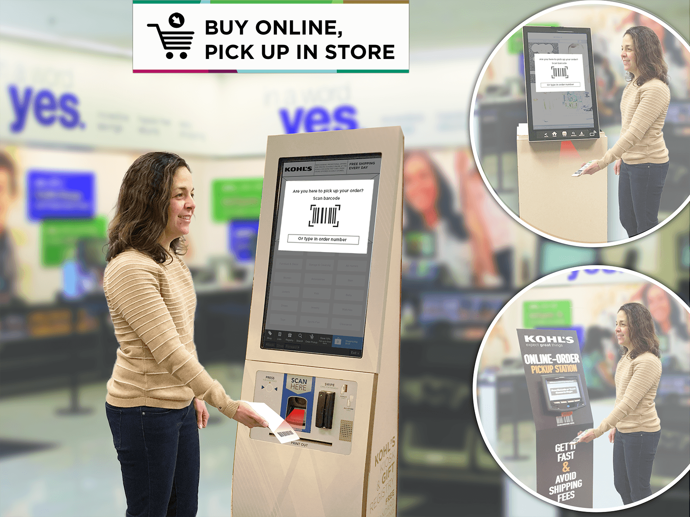
Outcomes & reflection
The proposal consolidated selected concepts for a faster, more predictable pickup experience. Some ideas informed near-term operational improvements; others created a longer-term direction for the service.
Leadership reflection: Service blueprints create alignment because they show where customer pain and operational reality meet. The most valuable design work here was bringing the right partners into the same problem—not producing more screens.
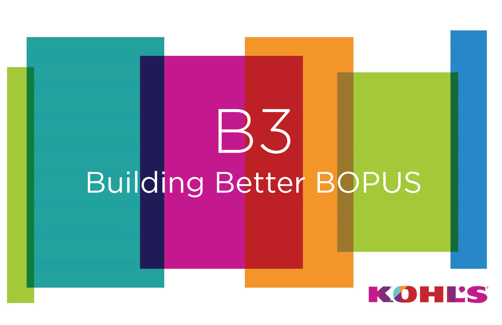